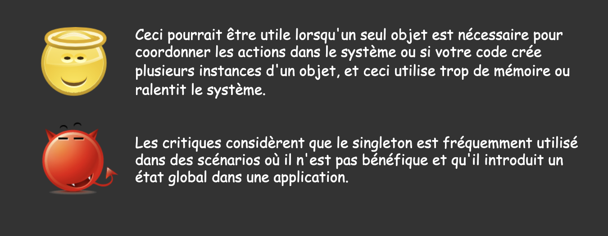
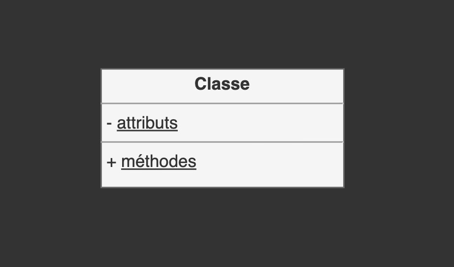
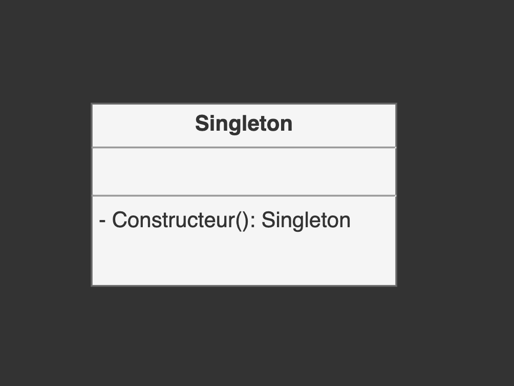
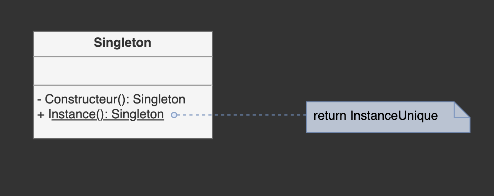

Design Patterns - Partie 4
Eric Demers, Michel Gagnon et Lévis Thériault
Patron Singleton
www.vishalchovatiya.com/singleton-design-pattern-in-modern-cpp
Intention
Assure qu'une classe n'a qu'une seule instance et fournit un point d'accès global.
Avantages et inconvénients
Attributs statiques + méthodes statiques != Singleton
- En C++ une méthode statique ne peut pas être virtuelle.
- Il n'y a pas de moment bien déterminé pour l'initialisation et le nettoyage.
Structure d'une classe Singleton
Structure d'une classe Singleton
SingletonGoF.h
class SingletonGoF {
private:
static SingletonGoF* pInstance;
SingletonGoF() = default;
public:
static SingletonGoF* Instance(){
if (!pInstance) {
pInstance = new SingletonGoF;
}
return pInstance;
}
};
SingletonGoF.cpp
#include "SingletonGoF.h"
SingletonGoF* SingletonGoF::pInstance = nullptr;
Si un singleton n'est jamais supprimé, s'agit-il alors d'une fuite de mémoire?
Il est nécessaire d'appeler le destructeur ici à la fin de l'exécution du programme
#include <iostream>
class SingletonGoF {
private:
static SingletonGoF* pInstance;
SingletonGoF() { std::cout << "construction!\n"; }
public:
~SingletonGoF() { std::cout << "destruction!\n"; }
static SingletonGoF* Instance(){
if (!pInstance) {
pInstance = new SingletonGoF;
}
return pInstance;
}
void imprimer() { std::cout << "bouh!\n"; }
};
SingletonGoF* SingletonGoF::pInstance = nullptr;
int main() {
SingletonGoF::Instance()->imprimer();
SingletonGoF::Instance()->~SingletonGoF();
return 0;
}
Avec le pointeur intelligent, il n'est plus nécessaire d'appeler manuellement le destructeur à la fin de l'exécution du programme
#include <iostream>
#include <memory>
class Singleton {
private:
static std::unique_ptr<Singleton> pInstance;
Singleton() { std::cout << "construction!\n"; }
public:
~Singleton() { std::cout << "destruction!\n"; }
static Singleton* Instance(){
if (pInstance == nullptr) {
pInstance = std::unique_ptr<Singleton>(new Singleton);
}
return pInstance.get();
}
void imprimer() { std::cout << "bouh!\n"; }
};
std::unique_ptr<Singleton> Singleton::pInstance(nullptr);
int main() {
Singleton::Instance()->imprimer();
return 0;
}
Scott Meyers, More Effective C++
Item 26: Limiting the number of objects of a class
Les objets statiques en C++
#include <iostream>
int f() {
static int x = 100;
return ++x;
}
int main() {
std::cout << f() << ", ";
std::cout << f() << ", ";
std::cout << f() << std::endl;
return EXIT_SUCCESS;
}
Les objets statiques en C++
Andrei Alexandrescu, Modern C++ Design, Page: 134
La variable statique est initialisée à l'exécution lors du premier passage à travers sa définition lorsque:
- L'initialisation n'est pas une constante qui peut-être déterminée au moment de la compilation.
- La variable statique est un objet qui possède un constructeur.
SingletonMeyers.h
class SingletonMeyers{
private:
SingletonMeyers() = default;
public:
static SingletonMeyers& Instance(){
static SingletonMeyers instanceUnique;
return instanceUnique;
}
};
Le destructeur est appelé automatiquement à la fin de l'exécution du programme
#include <iostream>
class Singleton {
private:
Singleton() { std::cout << "construction!\n"; }
public:
~Singleton() { std::cout << "destruction!\n"; }
static Singleton& getInstance() {
static Singleton instance;
return instance;
}
void imprimer() { std::cout << "bouh!\n"; }
};
int main() {
Singleton::getInstance().imprimer();
return 0;
}